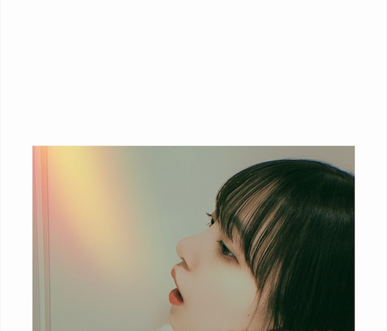

2020/0609Tue夏に聴きたい曲はなんですか？
暑いですね
夏に聴きたくなる曲ってたくさんありますよね〜
みなさんのナツウタ 聞かせてください！

あつーいって言ってる顔です
クーラーと扇風機が欠かせません...
長袖はもう着ない！
でもこれで急に寒くなったら嫌やなぁ
もんぞー
この間豚汁作ったのですが
お母さんに合格をもらいました！
わーい ((o(^∇^)o))
また作ろ♪
46時間TVたのしみ〜
ではでは
2020/06/09 16:18
コメント(861)
春茶さんが歌ってる「青」って曲！オススメ！聞いてみてね！
ブログ更新ありがとう!
ほんと暑いから熱中症には気を付けてね!
豚汁美味しそうで食べたくなるよ（笑）
もんぞーと大の仲良しだね!
乃木坂46のナツウタだと未央奈のウィンク見たいからジコチューだな
他のアーティストだとやっぱり定番だけど桑田佳祐の波乗りジョニーだな
最後に質問だけど、未央奈の夏に絶対食べる定番メニューはあるかな?
またブログ更新とモバメヨロシクね
ほんと暑いから熱中症には気を付けてね!
豚汁美味しそうで食べたくなるよ（笑）
もんぞーと大の仲良しだね!
乃木坂46のナツウタだと未央奈のウィンク見たいからジコチューだな
他のアーティストだとやっぱり定番だけど桑田佳祐の波乗りジョニーだな
最後に質問だけど、未央奈の夏に絶対食べる定番メニューはあるかな?
またブログ更新とモバメヨロシクね
堀工事中見ました
日村さんに豚汁食べさせませう！！
日村さんに豚汁食べさせませう！！
未央奈ちゃん豚汁美味しそうだね
めちゃ豚汁食べたくなってきた笑
俺も作ってみます☆
夏曲はやはり、
夏のFree&Easyと裸足でSummerは必ず聞いてますよw
去年は七瀬さんの煽りパートを未央奈ちゃんが引き継いでて、めっちゃ良かった

今年は神宮厳しいかもだけど、来年以降とあの感じ見たいなあ 復活するまで楽しみにしてます
復活するまで楽しみにしてます
46時間TV楽しみにしてますね
人狼がかなり楽しみですw
めちゃ豚汁食べたくなってきた笑
俺も作ってみます☆
夏曲はやはり、
夏のFree&Easyと裸足でSummerは必ず聞いてますよw
去年は七瀬さんの煽りパートを未央奈ちゃんが引き継いでて、めっちゃ良かった
今年は神宮厳しいかもだけど、来年以降とあの感じ見たいなあ
46時間TV楽しみにしてますね
人狼がかなり楽しみですw
SIRUPさんの「Do well」です！
ブログ更新ありがとう！
豚汁めっちゃ美味しそう〜
夏に聴きたい曲は、定番だけど、ガールズルール、裸足でsummerとかかな〜
豚汁めっちゃ美味しそう〜
夏に聴きたい曲は、定番だけど、ガールズルール、裸足でsummerとかかな〜
ナツウタ、やっぱり『サマータイム』ですね
ブログ更新ありがとうございます。別に自分から聴く訳じゃないけど、結局あー夏休みは毎年何かしらで聴いてる気がしますね。
未央奈さん、ブログありがとう！
裸足でSummer、逃げ水、ひと夏の長さより、
乃木坂には夏の歌が色々あるね。
今会社の帰りなので、豚汁の写真みると美味しそうでお腹がすいた。
今日の写真も可愛いよ。インスタの動画もみました。
46時間TVまで2週間きりました。楽しみ！
裸足でSummer、逃げ水、ひと夏の長さより、
乃木坂には夏の歌が色々あるね。
今会社の帰りなので、豚汁の写真みると美味しそうでお腹がすいた。
今日の写真も可愛いよ。インスタの動画もみました。
46時間TVまで2週間きりました。楽しみ！
flumpoolの夏よ止めないでがすきです！
ナツウタ。
暑い夏には、むさ苦しい「トゥイステッドシスター」を聞いています。
ゾンビ好き？の堀さまなら、もしかして気に入るかも！？ （失礼！）
アイ ウォナ ロック と ウィナ ゴナ テイク イット
カタカナで書いたので、変な感じですが、絶対元気になる名曲です。
暑い夏には、むさ苦しい「トゥイステッドシスター」を聞いています。
ゾンビ好き？の堀さまなら、もしかして気に入るかも！？ （失礼！）
アイ ウォナ ロック と ウィナ ゴナ テイク イット
カタカナで書いたので、変な感じですが、絶対元気になる名曲です。
Mrs. GREEN APPLEの「青と夏」「サママ・フェスティバル！」
SHISHAMO「君と夏フェス」
04 Limited Sazabys「swim」
My Hair is Bad「君が海」
バンドが好きなのでよく聴きます！
乃木坂ではガールズルールです！
SHISHAMO「君と夏フェス」
04 Limited Sazabys「swim」
My Hair is Bad「君が海」
バンドが好きなのでよく聴きます！
乃木坂ではガールズルールです！
堀さん、こんばんは。
「うーん、夏歌かあ。何がいいかな。名曲いっぱいあるよね」と思案しながら、知らぬ間に口ずさんでいたのが乃木坂46の『スカイダイビング』でした。
やっぱり「♪な・つ・だ！」からの「♪君にスカーイダイーブ！」にかけての爽快感がたまりません。聴いても歌っても爽やかな気分になれる曲です。
僕も仕事着のワイシャツ以外の部屋着は、もう半袖オンリー。まだ梅雨寒の日があるかもしれませんが、もう陽ざしの紫外線は夏本番と変わらないでしょう。夏痩せしないよう、美味しい豚汁食べて、この夏も元気に乗りきっていきましょう。
ではまたコメントします。おやすみおな。
さらばだ、また会おう！（気球に乗って去りぬ〜）
「うーん、夏歌かあ。何がいいかな。名曲いっぱいあるよね」と思案しながら、知らぬ間に口ずさんでいたのが乃木坂46の『スカイダイビング』でした。
やっぱり「♪な・つ・だ！」からの「♪君にスカーイダイーブ！」にかけての爽快感がたまりません。聴いても歌っても爽やかな気分になれる曲です。
僕も仕事着のワイシャツ以外の部屋着は、もう半袖オンリー。まだ梅雨寒の日があるかもしれませんが、もう陽ざしの紫外線は夏本番と変わらないでしょう。夏痩せしないよう、美味しい豚汁食べて、この夏も元気に乗りきっていきましょう。
ではまたコメントします。おやすみおな。
さらばだ、また会おう！（気球に乗って去りぬ〜）
未央奈ちゃんブログ更新ありがとう〜☺️
未央奈ちゃんのブログいつも楽しみにしてます☺️
乃木坂の曲からじゃないんだけど、TWICEのDance The night awayはオススメです！
未央奈ちゃんがお家でダンスパーティする時に良かったら聞いてみてください！！
豚汁美味しそう❤
未央奈ちゃんのブログいつも楽しみにしてます☺️
乃木坂の曲からじゃないんだけど、TWICEのDance The night awayはオススメです！
未央奈ちゃんがお家でダンスパーティする時に良かったら聞いてみてください！！
豚汁美味しそう❤
あついねー
ナツウタ！
サザンかなー。あれとかあれとか。
天気の子だと 風たちの声とか！
乃木坂だと夏フリかなー！
ナツウタ探してたら久しぶりに睡蓮花とかイケナイ太陽とか出てきて懐かしい〜(^-^)
笑
インスタでちゃんとあついって吹出しついてて笑った。かわいい恐竜さん♪
アツアツよ〜
どもども。
もんぞーくん
ゲンキデスカ！
すごーい！！！
お母さんから合格もらうってすごい！
おめでとっ！
豚汁超おいしそうじゃん！たべたーい。☺️
46時間TVたのしみ〜
ではは〜
ナツウタ！
サザンかなー。あれとかあれとか。
天気の子だと 風たちの声とか！
乃木坂だと夏フリかなー！
ナツウタ探してたら久しぶりに睡蓮花とかイケナイ太陽とか出てきて懐かしい〜(^-^)
笑
インスタでちゃんとあついって吹出しついてて笑った。かわいい恐竜さん♪
アツアツよ〜
どもども。
もんぞーくん
ゲンキデスカ！
すごーい！！！
お母さんから合格もらうってすごい！
おめでとっ！
豚汁超おいしそうじゃん！たべたーい。☺️
46時間TVたのしみ〜
ではは〜
ポルノグラフィティさんのミュージック・アワーという曲いいですよ！！
未央奈～ こんにちは
ブログ更新ありがとうございます。
インスタ２９万人突破、おめでとうございます。
夏歌、たくさんありますが、やはりこの曲でしょう。
「裸足でSummer」が一番です。ライブでは、唯一タオルを挙げて応援できる曲。そして何より、一番いいのは「サンダル脱ぎ捨て隊」の登場。誰が名付けたのか、こんなピッタリのはなかったし、このあと未央奈とひめたんが必死で自分のポジションに戻るところも、何度見ても、最高です。この３人は「サンエト」のメンバーでもありますが、同一年齢でもあり、成人式のこともしっかり覚えています。
というわけで、私にとってあまたある夏曲の中では、この曲が最高です。
ブログ更新ありがとうございます。
インスタ２９万人突破、おめでとうございます。
夏歌、たくさんありますが、やはりこの曲でしょう。
「裸足でSummer」が一番です。ライブでは、唯一タオルを挙げて応援できる曲。そして何より、一番いいのは「サンダル脱ぎ捨て隊」の登場。誰が名付けたのか、こんなピッタリのはなかったし、このあと未央奈とひめたんが必死で自分のポジションに戻るところも、何度見ても、最高です。この３人は「サンエト」のメンバーでもありますが、同一年齢でもあり、成人式のこともしっかり覚えています。
というわけで、私にとってあまたある夏曲の中では、この曲が最高です。
yuiのsummer song、裸足でsummerです^ - ^
夏色/ゆずさん
Summer Song/YUIさん
short hair/BaseBallBearさん
裸足でSummer/乃木坂46さん
Summer Song/YUIさん
short hair/BaseBallBearさん
裸足でSummer/乃木坂46さん
良いな豚汁、パクパク食べれる！
夏に聴きたい夏歌
GLAY/summerFM
Dragon Ash/summer tribe
乃木坂なら裸足でsummerとカップリングのシーグラ！
夏に聴きたい夏歌
GLAY/summerFM
Dragon Ash/summer tribe
乃木坂なら裸足でsummerとカップリングのシーグラ！
夏といえばTUBE！
夏を抱きしめて summerdream 湘南mylove
シーズンインザサン onlyYOU君と夏の日を
とっても夏を感じさせてくれますよ
夏を抱きしめて summerdream 湘南mylove
シーズンインザサン onlyYOU君と夏の日を
とっても夏を感じさせてくれますよ
ヤッホー未央奈ブログ更新ありがとー❗夏歌、ジコチュー。ガールズルール❗もんぞーだんだん生きてるみたいに見えてきた？笑、ドリームバイト観てたけど未央奈肌白い透き通った感❗凄い綺麗でした❗ありがとー❗体に気配りして頑張ってね～❗でわでわ、おやすみなさい❗
sumikaてバンドのマイリッチサマーブルースが夏休み感があって好きです
応援してます。
いつもブログ楽しみにしてます
いつもブログ楽しみにしてます
サザンオールスターズ
ブログ更新有り難う
豚汁めっちゃ美味しそう
夏歌のオススメは、
稲垣潤一さんの
夏のクラクション
聴いてみて
豚汁めっちゃ美味しそう
夏歌のオススメは、
稲垣潤一さんの
夏のクラクション
聴いてみて
乃木坂46以外だと三代目JSOULBROTHERSのSummerMadness、RAINBOWとかです！
夏うた。
キャンディーズの"黄色いビキニ" 聴いたことある？
初めてビキニを着る女の子の気持ちを歌った可愛い曲だよ。
伊藤 蘭さんとのコラボ（年下の男の子）めちゃ良かったよ！
キャンディーズの"黄色いビキニ" 聴いたことある？
初めてビキニを着る女の子の気持ちを歌った可愛い曲だよ。
伊藤 蘭さんとのコラボ（年下の男の子）めちゃ良かったよ！
未央奈ブログ更新ありがとう！
自分のナツウタは
ミセスの青と夏
ゆずの夏色
ガールズルール
かな！
あと最近聞いてるのは
サウシードッグの「いつか」って曲！
夏の涼しくなってくる夕方あたりに聞くとめっちゃイイ！
良ければ聞いてみてね！
これからも応援してるよ！
体調には気をつけてね！
by未央奈推しのブラックコーヒー
自分のナツウタは
ミセスの青と夏
ゆずの夏色
ガールズルール
かな！
あと最近聞いてるのは
サウシードッグの「いつか」って曲！
夏の涼しくなってくる夕方あたりに聞くとめっちゃイイ！
良ければ聞いてみてね！
これからも応援してるよ！
体調には気をつけてね！
by未央奈推しのブラックコーヒー
いきものがかりさんのハルウタです！
夏の日の1993！
こんばんは、宜しければご参考までにですが、
個人的にはneon treesのfeel goodが夏曲のマイブームです
後は、Youtubeのiksonの曲ですね
よくお洒落なvlog動画とかのbgmに使われてたりします
曲名で言うとparadise、take offとかですね
Youtubeで漁ってるので偏りが出ますが
ご参考までに宜しく御願いしますm(_ _)m
個人的にはneon treesのfeel goodが夏曲のマイブームです
後は、Youtubeのiksonの曲ですね
よくお洒落なvlog動画とかのbgmに使われてたりします
曲名で言うとparadise、take offとかですね
Youtubeで漁ってるので偏りが出ますが
ご参考までに宜しく御願いしますm(_ _)m
未央奈ちゃんが作った豚汁美味しそう❗
食べたいな
夏に聴きたい曲は乃木坂46の曲だったら[ぐるぐるカーテン]と[ガールズルール]、[何度目の青空か]、[おいでシャンプー]。アイドル以外の曲だったらサザンオールスターズの[真夏の果実]と[夏をあきらめて]。ランクアンシエルの[夏の憂鬱]。キンキキッズの[ジェットコースターロマンス]かな！
では
食べたいな
夏に聴きたい曲は乃木坂46の曲だったら[ぐるぐるカーテン]と[ガールズルール]、[何度目の青空か]、[おいでシャンプー]。アイドル以外の曲だったらサザンオールスターズの[真夏の果実]と[夏をあきらめて]。ランクアンシエルの[夏の憂鬱]。キンキキッズの[ジェットコースターロマンス]かな！
では
ジブリでいったらシンプルに｢あの夏へ｣かな
乃木坂だったら夏曲多すぎて選べないですね笑
乃木坂だったら夏曲多すぎて選べないですね笑
堀ちゃん、ブログ更新ありがとうございます。
乃木坂46の夏曲はもちろん大好きですが、乃木坂以外で好きな夏曲といえば、RADIO FISH さんで｢SUMMER TIME｣と｢ワンチャンcoco夏☆物語｣です！
46時間TV もうすぐですね。楽しみです！
これからも応援しています！
乃木坂46の夏曲はもちろん大好きですが、乃木坂以外で好きな夏曲といえば、RADIO FISH さんで｢SUMMER TIME｣と｢ワンチャンcoco夏☆物語｣です！
46時間TV もうすぐですね。楽しみです！
これからも応援しています！
ブログ更新ありがとうございます
自分は乃木坂46の夏曲なら「ひと夏の長さより」、「逃げ水」、「自惚れビーチ」などが聞きたくなります。他のアーティストだとスピッツの「渚」、「夏の魔物」やGReeeeN の「オレンジ」、「夏の音」などですかね。
自分は乃木坂46の夏曲なら「ひと夏の長さより」、「逃げ水」、「自惚れビーチ」などが聞きたくなります。他のアーティストだとスピッツの「渚」、「夏の魔物」やGReeeeN の「オレンジ」、「夏の音」などですかね。
裸足でSummer
夏のfree＆Easy
ジコチューで行こう
ガールズルール
です!!
夏のfree＆Easy
ジコチューで行こう
ガールズルール
です!!
夏よありがとう TUBEさんはどうでしょぅ♪
夏のFree&Easy！
もしくはケツメイシの夏の思い出(笑)
もしくはケツメイシの夏の思い出(笑)
ブログ更新ありがとうございます 豚汁美味しそうー 夏に聞きたいのはかき氷の片思いです！！
なんとっ！
2016-2017CDTV年越しライブ
裸足でSummer センター代役
これが、堀未央奈をウォッチし続ける
きっかけになりましたね、今思えば。。
淑女が約束されてる少女の透き通った存在感から
繰り出されるパフォーマンスが、この曲のimage
をより一層膨らませ、アイドル歌謡ポップの極みだと感じました。
オトナ未央奈もずっと応援してます。
いつも全力の未央奈さん。
何がきっかけでハマるかは、わからないので、
これからも全力で頑張ってほしいです。
2016-2017CDTV年越しライブ
裸足でSummer センター代役
これが、堀未央奈をウォッチし続ける
きっかけになりましたね、今思えば。。
淑女が約束されてる少女の透き通った存在感から
繰り出されるパフォーマンスが、この曲のimage
をより一層膨らませ、アイドル歌謡ポップの極みだと感じました。
オトナ未央奈もずっと応援してます。
いつも全力の未央奈さん。
何がきっかけでハマるかは、わからないので、
これからも全力で頑張ってほしいです。
堀さん、こんばんは。ブログ更新してくれて嬉しいです。
夏に聞きたい曲はフジファブリックの若者のすべてです。過去への執着を断ち切る予感で終わるように思えて歌詞が好きです。
火を出してるような虹を食べてるような写真は、睫毛長くて伏し目美人ですね。もんぞーくんと写ってる白い服は何となく中世ヨーロッパみたいで可愛いと思います。
それで豚汁合格おめでとうございます。人参が色味あって美味しそうですね。色味のことだけを考えるなら、虹色の皿か箸なら何でも美味しく見えるのかなってふと思いました。
では、猛暑日続きなので暑さに負けないようしっかり食べつつ46時間TVの準備等々、頑張ってくださいね。僕はさっぱりした食べ物だと、ざるうどんが好きです。
夏に聞きたい曲はフジファブリックの若者のすべてです。過去への執着を断ち切る予感で終わるように思えて歌詞が好きです。
火を出してるような虹を食べてるような写真は、睫毛長くて伏し目美人ですね。もんぞーくんと写ってる白い服は何となく中世ヨーロッパみたいで可愛いと思います。
それで豚汁合格おめでとうございます。人参が色味あって美味しそうですね。色味のことだけを考えるなら、虹色の皿か箸なら何でも美味しく見えるのかなってふと思いました。
では、猛暑日続きなので暑さに負けないようしっかり食べつつ46時間TVの準備等々、頑張ってくださいね。僕はさっぱりした食べ物だと、ざるうどんが好きです。
太陽ノック*\(^o^)/*
更新ありがとうございます！
僕はMr.Childrenのシーソーゲーム〜勇敢な恋の歌〜とHANABIが聴きたくなります！是非聴いてみてください！
僕はMr.Childrenのシーソーゲーム〜勇敢な恋の歌〜とHANABIが聴きたくなります！是非聴いてみてください！
夏に聞きたい曲は乃木坂だと太陽ノック、ガルル、咄嗟（夏の終り）、Free&Easy、オフショアガールとか
他の人だと椎名林檎さんの長く短い祭り、aikoさんの花火、SMAPのBattery、バンバンバカンス
MARTINGARRIXのsummerdays
カルヴィンハリスのsummer、blameとかお薦めです！
他の人だと椎名林檎さんの長く短い祭り、aikoさんの花火、SMAPのBattery、バンバンバカンス
MARTINGARRIXのsummerdays
カルヴィンハリスのsummer、blameとかお薦めです！
未央奈お疲れ様(*´∀｀)ノもんぞーとのツーショット可愛いね(о´∀`о)豚汁も美味しそう(￣￢￣)夏に聞きたい曲はガールズルール裸足でsummer自惚れビーチかな違うアーティストでならチューブの曲も良いね～ではまたブログ待ってるねチャオ未央奈
こんばんは 未央奈
未央奈
＞夏に聴きたくなる曲ってたくさんありますよね〜
＞みなさんのナツウタ 聞かせてください！
なんだろう(´・ω・｀)
『夏の花は向日葵だけじゃない』かな？
『パレオはエメラルド』とか懐かしいな
豚汁おいしそう
46時間TVたのしみ(｀・ω・´)
おやすみおな
良い夢を
また明日
＞夏に聴きたくなる曲ってたくさんありますよね〜
＞みなさんのナツウタ 聞かせてください！
なんだろう(´・ω・｀)
『夏の花は向日葵だけじゃない』かな？
『パレオはエメラルド』とか懐かしいな
豚汁おいしそう
46時間TVたのしみ(｀・ω・´)
おやすみおな
良い夢を
また明日
逃げ水。
実際見てみたい！
甲子園も幻になっちゃったし…
実際見てみたい！
甲子園も幻になっちゃったし…
サザンオールスターズ１択でごめんなさい


サマータイム
サマーラブ ジョージベンソン
ひまわり ヘンリーマンシーニ
夏の日の恋
夏休み 吉田拓郎
なつまつり 井上陽水
パラソルさして 西岡恭蔵
こんな感じかな❗
byMyRomance